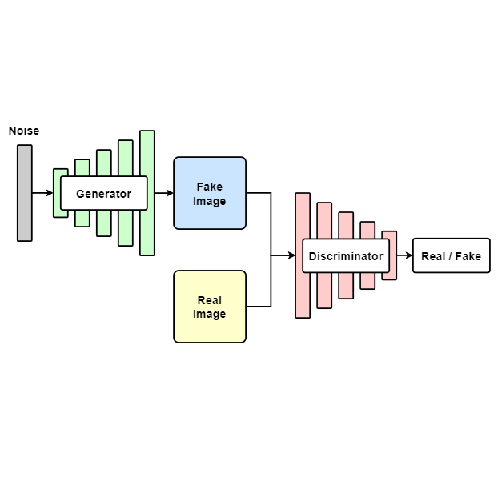
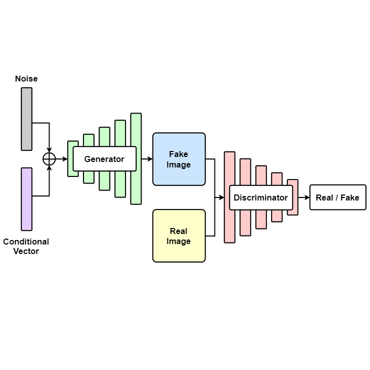
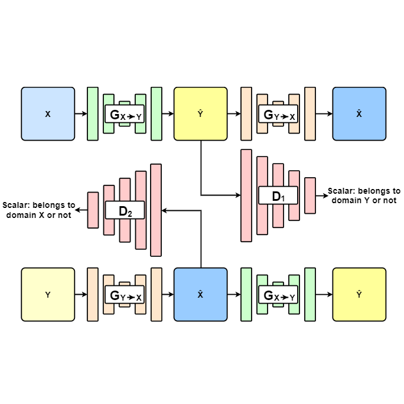
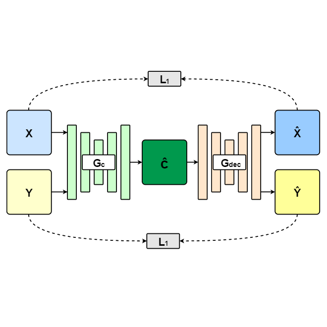

生成對抗網路
Generative Adversarial Network
生成對抗網路是一種非監督式學習的影像生成網路架構，
由生成器（Generator, G）和鑑別器（Discriminator, D）組成，
生成器主要的目的為透過輸入隨機向量學習產生能以假亂真的圖像；
而鑑別器則是學習判斷輸入的圖像為真實或生成的圖像。
透過生成器及鑑別器互相對抗學習，就能生成出逼近真實圖像集裡的圖像。
對抗損失函數：
V(G, D) = Ex~Pdata(x)[log D(x)] + Ez~Pnoise(z) [log (1 - D(G(z)))]
其中 E 為分佈函數的期望值，
Pdata(x)為真實圖像的資料分佈，
Pnoise(x)為隨機向量的資料分佈，
G(z)為生成器合成的圖像，
D(x)為鑑別器判斷圖像分佈為真實圖像的機率。
條件式生成對抗網路
Conditional Generative Adversarial Network
條件式生成對抗網路是一種基於 GAN 的神經網路架構，
Conditional GAN 的生成器與鑑別器可以加入額外的條件，
因此目標資料集必須標記與圖像匹配的條件標籤。
生成器可透過隨機產生的條件及隨機向量產生出符合該條件的圖片，
試圖使鑑別器的誤判為該條件的真實圖片。
訓練鑑別器的過程為輸入真實圖片、生成圖片和各自匹配的標籤，
訓練鑑別器判斷真偽。


循環式生成對抗網路
Cycle Generative Adversarial Network
圖像轉換的任務中，
如果有大量成對的資料，
可以單純使用編解碼器進行訓練與圖像轉換。
然而要獲得大量的成對資料集是不容易的，
在真實世界中有時甚至是不可能的。
像是照片轉素描或照片轉卡通風格，都會碰到類似問題。
為了解決成對數據不易獲得的問題，
Cycle GAN 的研究探索並建立了於不需要成對資料集，
就能夠實現兩個領域間圖像轉換的一致性。
該研究提出了循環一致性損失（cycle consistency loss），
以減輕訓練的不穩定性。
Cycle GAN 由兩個生成器及兩個鑑別器組合而成，
其中來源領域的輸入圖像先透過一個生成器轉換成目標領域的圖像，
接著透過另一個生成器轉換回來源領域；
此重建圖像會與輸入圖像計算循環一致性損失（𝑓cyc），
而目標領域的鑑別器則根據生成圖像與真實圖像，
計算對抗損失（𝑓adv）。
將原有來源與目標領域互換，
則可計算另一組損失和網路。
循環生成對抗網路最後使用了四個損失函數，
對兩個生成器和兩個鑑別器實現聯合最佳化的學習。
組合式生成對抗網路
Compositional Generative Adversarial Network
生成對抗網絡可以生成非常複雜和逼真的圖像，
但通常只能從單個圖案中採樣，
而忽略了場景中可能存在多個物件之間的空間交互狀態。
若是想要獲得圖片中不同對象之間複雜的空間交互狀態，
包括它們的相對縮放、空間佈局、遮擋或視點變換，
是一個具有挑戰性的問題。
為了解決圖片合成上空間交互關係的問題，
Compositional GAN 提出了一種自適性組合分解架構 Composition-by-Decomposition (CoDe) 網絡來組合圖片。
給定來自兩個不同分佈的對像圖像，
Compositional GAN 模型可以根據輸入對象的紋理和形狀從它們的聯合分佈中生成逼真的合成圖像。
其輸入為兩個不同的圖像，
該方法的中心思想是通過自適性損失函數監督兩個圖像（XT，YT）的合成，
確保生成的合成圖像可以進一步分解回各自的單獨對像圖像。
合成是使用 Conditional GAN 執行，
該網路將兩個通道的 RGB 圖像 (XT, YT) 作為輸入，
以生成相應的合成輸出，
並適當地合成兩個輸入圖像。
然後將生成的圖像輸入另一個 Conditional GAN，
使用 L1 損失函數將其分解回其組成對象（XT, YT）。
